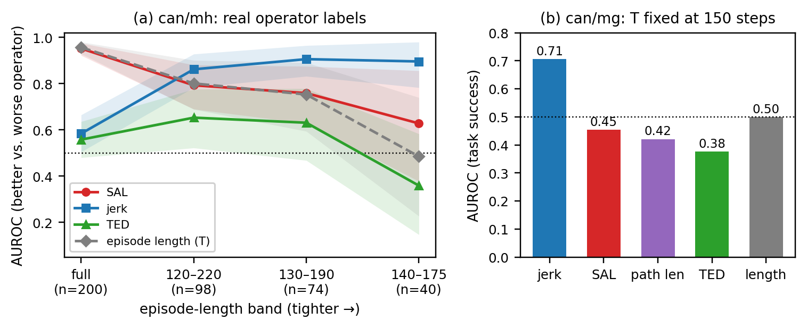

Smoothness Ranks Skill, Not Success: An Audit of Published Trajectory-Smoothness Curation aetrics Under Episode-Length Controls
Shows that published smoothness metrics for curating robomimic demonstrations mostly track episode length and operator skill rather than task success; curating by the contact-aware TED metric cut downstream policy success by a third versus random selection. Accepted as a poster at the NeurIPS 2026 RoboPAD workshop (arXiv:2610.17427).